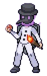

BEM-VINDOS AO TIME

lider (Vektor)
Regras
- Respeito e Comportamento:
- Mantenha o respeito entre membros e com outros jogadores.
- Evite ofensas, provocações e comportamentos tóxicos.
- Respeite as decisões dos líderes e administradores do Time.
- Participação Ativa:
- Participe regularmente das atividades do Time, como batalhas e eventos.
- Avise com antecedência se precisar se ausentar por um período prolongado.
- Contribuição e Ajuda:
- Participe de eventos do time para apoiar a equipe.
- Comunicação:
- Use os canais de comunicação do time.
- Informe aos líderes sobre qualquer problema ou sugestão para melhorar o time.
- Promoções e Rebaixamentos:
- A promoção a cargos mais altos dentro do time será baseada no desempenho e contribuição do membro.
- Rebaixamentos ou expulsões podem ocorrer por violação das regras ou falta de participação.
- Eventos e Atividades:
- Participe de eventos e atividades organizadas pelo time.
- Respeite as regras e diretrizes estabelecidas para cada evento.